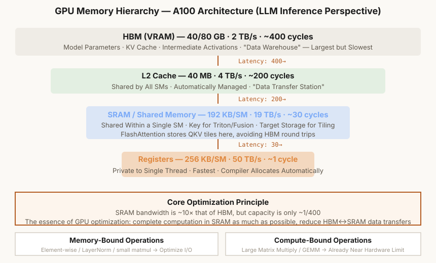

第10章 推理优化与前沿
KV Cache / 稀疏注意力 / 量化 / RAG / Agent——LLM 的工程落地
本章怎么学：把工程优化按瓶颈分类
- 前置知识：第 8 章生成流程、显存和 batch 的基本概念。
- 学习目标：把推理瓶颈拆成 compute、memory、IO、调度和检索问题，并能设计 KV Cache、量化、RAG、benchmark 与 SLO。
- 本章产出：KV Cache、量化、最小 RAG、工具调用设计、基准测试、指标结论摘要和 LSH 检索示例。
- 完成标准：你能看到一个推理慢/贵的问题时，判断瓶颈更可能在计算、显存、带宽还是检索。
- 练习产出：提交 KV 显存计算、prefix cache 节省率、量化误差实验、RAG demo、tool schema 设计、压测 JSON、P50/P95/P99 报告、指标结论摘要和上线方案；配套作业见 assignments/ch10_inference/。

图 10-1: GPU 内存层次 — A100 架构 (LLM 推理视角)
10.1 推理瓶颈分析——Roofline 模型视角
你已经构建了模型、训练了它、微调了对齐。现在，是时候让它在实际应用中运行了。推理优化就是让模型跑得更快、更便宜、支持更长的上下文。
推理分为两个阶段，各自的瓶颈不同：
- Prefilling（预填充）：处理整个 prompt。大量矩阵乘法可并行——计算密集（compute-bound）。瓶颈在 GPU 算力（FLOPS）。
- Decoding（解码）：逐 token 生成。每步只处理 1 个 token——带宽密集（memory-bound）。GPU 大部分时间在等待将参数从 HBM 搬运到计算单元。瓶颈在内存带宽。
Roofline 模型
Roofline 模型是一个可视化工具，横轴是算术强度（Arithmetic Intensity = FLOPs / Bytes），纵轴是性能（FLOPs/s）。Prefilling 的算术强度高，位于 Roofline 的"计算受限区"（右上斜线区域）；Decoding 的算术强度极低，位于"带宽受限区"（水平平台区域）。
这解释了为什么增加 batch size 对 Decoding 帮助很大——更大的 batch 提高了算术强度，将操作推回计算受限区。这也解释了为什么 KV Cache、量化、GQA 等技术对 Decoding 特别有效——它们都减少了内存搬运量。
10.2 KV Cache——消除 Decoding 的重复计算
在自回归生成中，每一步计算注意力时，我们都在重复计算之前所有 token 的 Key（K）和 Value（V）矩阵。KV Cache 的核心思想是将之前步的 K 和 V 缓存起来，避免重复计算。
计算量对比
没有 KV Cache 时，第 t 步的输入序列长度为 t，注意力计算量是 ——序列变长时计算量平方增长。有 KV Cache 时，每步只需计算新增 token 的 K、V，注意力计算量降到 ：
内存代价
KV Cache 以计算换内存。单 batch 缓存大小为 ，其中 2 分别对应 K 和 V， 是实际缓存的 KV head 数而不是 query head 数。以 Llama 3 8B 风格的 GQA 配置为例，32 层、、、8K 上下文、FP16 时，单请求 KV Cache 约 1GB；若 batch 为 4 或并发中同时保留 4 条同长度序列，则约 4GB。没有 GQA/MLA 等压缩时，长上下文 KV Cache 会很快成为显存主项。
10.3 编程练习 1：实现 KV Cache
练习 1：带 KV Cache 的自注意力层
任务：实现 AttentionWithCache，支持增量解码时的 KV 缓存。
要求：
forward(x, cache=None)接收当前 token 的输入和上一步的 cache- 若无 cache（首步），正常计算所有位置的 K、V 并缓存
- 若有 cache（后续步），拼接历史 K/V 与新计算的 K/V
- 返回
(output, new_cache) - 实现因果掩码时注意 的情况（ 但 ）
# 预期用法
attn = AttentionWithCache(d_model=512, n_heads=8)
cache = None
# Decoding: 每次只输入 1 个 token
for step in range(max_len):
x = embed(torch.tensor([[token_id]])) # (1, 1, 512)
out, cache = attn(x, cache=cache)
token_id = sample(out)
💡 Q 和 K/V 长度不同的掩码：当 时（中间解码步骤），掩码矩阵的形状是 ，其中只有最后 列是因果的。之前缓存的 token 在对应位置应该全部可见。
10.4 编程练习 2：计算 KV Cache 显存占用
理解 KV Cache 的内存占用对于设计推理系统至关重要。这个练习让你亲手计算不同模型配置下的 KV Cache 大小。
练习 2：KV Cache 内存分析
任务：实现 kv_cache_memory_analysis 函数，计算并打印 KV Cache 的显存占用。
公式：
要求：
- 计算每层 KV Cache 的 MB 数
- 计算总的 KV Cache 大小（GB）
- 支持不同 batch size、KV head 数和 dtype bytes
- 对以下三种配置分别输出结果：
- GPT-2 small: 12 层, 12 头, d_head=64, L=1024, FP16
- Llama 3 8B: 32 层, n_kv_heads=8, d_head=128, L=8192, FP16
- MLA-style long context toy: 60 层, latent cache 等效 1 个 KV head, d_head=128, L=128K, FP16
# 预期输出 GPT-2 small: KV Cache 0.04 GB Llama 3 8B style: KV Cache 1.00 GB (batch=1), 4.00 GB (batch=4) MLA-style toy: KV Cache 3.66 GB (标准 GQA 8 KV heads 约 29.30 GB)
💡 MLA 为何如此有效？标准 MHA 每头独立 K/V，GQA 分组共享。MLA 更进一步——将 K/V 投影到低维潜空间（latent space），缓存压缩后的向量而非完整 K/V。DeepSeek-V2/V3 报告把 MLA 作为 KV cache 压缩方案；具体压缩率取决于 latent 维度、RoPE 分支和实现配置。课程使用 toy 配置帮助学生掌握数量级，不把它写成任意真实模型的固定规格。
10.5 稀疏与压缩注意力：长上下文的计算取舍
MLA（第 4 章）主要压缩 KV Cache，但注意力计算本身仍随上下文长度增长。长上下文系统常用两类思想降低成本：只看一部分候选 token 的稀疏注意力，以及先把相邻 token 压缩成较少代表项的压缩注意力。这些方法是前沿系统案例，不应被当作所有模型都采用的固定标准。
可学习 top-k 稀疏
可学习稀疏注意力用一个轻量索引器为每个 query 给候选 KV 打分，只保留 top-k 个做精确注意力。若每步只访问 个候选，主注意力项可从 降到近似 （）；但索引器、压缩器、跨层调度和硬件 kernel 仍会贡献额外开销。
压缩后再稀疏选择
压缩稀疏注意力先把每 m 个相邻 token 的 KV 压成 1 个条目，再在这些压缩条目上做 top-k 稀疏选择。它不同于固定滑动窗口：稀疏模式可以由数据驱动，也可以跨越长距离；但压缩会损失细粒度 token 信息，尤其可能影响精确引用、代码位置、表格单元格和长文档中的局部事实。
超压缩全局摘要
另一类方法对全序列 KV 做更激进的 pooling 或 learned compression，再在压缩表示上做稠密注意力。这给模型一个廉价的“全局俯瞰”，弥补 top-k 稀疏选择可能漏掉的远端信息。压缩率越高，计算越省，但越难保留精确 token 级证据。
如何组合与如何评估
稀疏层和全局压缩层可以按层交替、并联融合或只用于部分长上下文层。课程分析这类方法时只需要问三件事：访问的 KV 项从 降到多少，额外索引/压缩开销是多少，质量是否在长依赖、精确引用和多跳任务上退化。任何“1M context”或“推理 FLOPs 降到多少”的 claim 都必须绑定具体模型、上下文长度、硬件、kernel 和评测集。
10.6 编程练习 3：实现对称 INT8 量化
量化将模型权重从高精度转换到低精度，减少内存和带宽需求。这个练习实现最基础的对称 per-channel INT8 量化。
练习 3：对称 per-channel INT8 量化
任务：实现对称 per-channel 的 INT8 量化和反量化。
公式：
要求：
quantize_per_channel(tensor)对矩阵的每一列（output channel）计算独立的缩放因子dequantize(quantized, scales)反量化回 FP32- 对称量化：零点固定在 0（不需要 zero_point）
- 计算量化误差（NRMSE %：）
# 预期用法
weight = torch.randn(4096, 4096) * 0.02 # 模拟权重矩阵
q_weight, scales = quantize_per_channel(weight)
deq_weight = dequantize(q_weight, scales)
error = nrmse(weight, deq_weight)
print(f"INT8 量化误差: {error:.2f}% (压缩比: 4x vs FP32)")
# 预期: INT8 量化误差约 0.5-2%
💡 SmoothQuant 的技巧：激活值中的 outlier 是量化的主要挑战。SmoothQuant 通过等价缩放把一部分量化难度从激活迁移到权重上——对激活除以 s，对权重重乘 s。它是 INT8 量化的重要方法之一，但最终精度仍取决于校准数据、模型结构和部署 kernel。
10.7 FlashAttention——IO 感知的注意力加速
FlashAttention（Dao et al., 2022）是近年来最重要的注意力加速技术。它不改变数学结果，而是通过 IO-aware 算法 大幅减少 GPU HBM 访问次数。
标准注意力的问题：HBM 瓶颈
标准注意力将 写入 HBM，读取算 softmax，再将 写回。这是 的 HBM 读写——当 L=128K 时，约 32GB 的 HBM 流量（仅存储一个中间矩阵）。
FlashAttention 的三个关键思想
- Tiling（分块）：将 QKV 分块到 SRAM（片上缓存，~192KB/A100）中计算，避免中间矩阵写入 HBM
- Recomputation（重计算）：反向传播时不存储注意力权重，重新计算——以计算换内存
- Online Softmax：分块计算 softmax 的算法——不需要先算所有 S 再做 softmax，每处理一个块就更新 softmax 统计量
10.8 编程练习 4：实现最小 RAG 流水线
RAG（检索增强生成）是缓解 LLM 知识过期、领域知识缺口和部分幻觉问题的常用方案。它给模型"开卷考试"——把外部文档检索后注入 prompt；但检索命中、上下文压缩和答案忠实性仍需要单独评测。
练习 4：RAG 检索 + 生成流水线
任务：实现 SimpleRAG 类，包含文档分块、嵌入、检索、增强生成的全流程。
要求：
add_document(text)将文档分块（每块 512 tokens，64 tokens 重叠），计算每块的嵌入向量retrieve(query, top_k=3)查询编码后做余弦相似度搜索，返回最相关的top_k块query(question)检索 → 上下文注入 prompt → LLM 生成回答- 支持稠密检索（嵌入相似度），用
np.dot和np.linalg.norm实现余弦相似度
# 预期用法
rag = SimpleRAG(embed_model=my_encoder, llm=my_llm)
rag.add_document("""深度学习是机器学习的一个分支...""")
rag.add_document("""反向传播是训练神经网络的核心算法...""")
answer = rag.query("什么是反向传播？")
# 应输出: 基于检索到的文档内容生成的回答
# 如果文档中无相关信息，应明确说明"未找到相关信息"
💡 进阶 RAG 技巧：1) Hybrid Search = 稠密检索 + BM25 稀疏检索，通过 RRF 合并排序；2) Reranking：检索 Top-50 后用交叉编码器重排，只取 Top-3；3) MMR：在 query 相关性和 chunk 去冗余之间折中；4) Query Rewriting：检索前让 LLM 改写查询（消歧、指代消解）。这些技巧常能提高召回和答案忠实性，但提升幅度必须在固定数据集、query 分布和评价指标上报告。
10.8A RAG 评估：把错误拆成检索错误和生成错误
RAG 系统的难点不在于“把文档塞进 prompt”，而在于判断失败发生在哪一层。一个回答错了，可能是文档分块切断了关键信息，embedding 没召回正确 chunk，reranker 排错，上下文拼装超过窗口，或者生成模型没有忠实使用检索内容。课程级 RAG 评估必须把这些环节拆开看。
失败分解
| 环节 | 要问的问题 | 常用指标 | 常见改法 |
|---|---|---|---|
| Chunking | 答案所需信息是否被完整保留在 chunk 中 | 答案覆盖率、chunk 长度分布 | 按标题/段落分块，调大 overlap，保留元数据 |
| Embedding | 查询和相关文档是否在向量空间接近 | InfoNCE loss、Recall@k、MRR、nDCG | 领域内 contrastive fine-tuning，加入 query rewriting，混合 BM25 |
| Retrieval | top-k 是否包含足够的相关上下文 | Context recall、命中率、重复 chunk 比例 | 调 top-k、过滤低分、按来源去重 |
| Reranking | 最有用的 chunk 是否排在前面 | nDCG@k、top-1 relevance | 交叉编码器重排，多阶段检索 |
| Prompt assembly | 上下文是否被正确组织进模型窗口 | 截断率、引用位置、token 占用 | 压缩上下文，按相关性和新鲜度排序 |
| Generation | 回答是否忠实于检索内容 | 答案正确率、faithfulness、引用一致性 | 要求基于上下文回答，无法支持时明确说明 |
离线评估与线上指标
离线阶段先构造 query-answer-document 三元组：每个问题对应一个标准答案和应命中的文档片段。检索模块报告 Recall@k、MRR、nDCG；生成模块报告答案正确率、引用一致性和未命中时是否拒绝编造。线上阶段再看延迟、成本和用户行为：检索耗时、rerank 耗时、prompt token 数、回答 token 数、用户追问率、人工接管率。
训练 bi-encoder retrieval embedding 时，常用 in-batch negatives：同一个 batch 中第 i 个 query 的正样本文档是第 i 个 document，其余 document 都作为负样本。Ch10 作业中的 contrastive_inbatch_loss(query_embeddings, doc_embeddings, temperature) 对 embedding 做 L2 normalization，计算 Q D^T / temperature，再用对角线标签做 cross entropy。这就是 InfoNCE / contrastive retrieval loss 的最小形式；它训练的是向量空间，后续仍要用 Recall@k、MRR、nDCG 和端到端答案质量检验是否真的改善 RAG。
Worked Example：in-batch negatives 如何变成检索分类题
设一个 batch 里有 2 个 query 和 2 个 document，向量都已 L2 normalize，温度 temperature=0.5。对角线是正样本配对：q0 -> d0，q1 -> d1。
训练时把每一行当成一个分类问题，标签是 [0, 1]：第 0 个 query 应选第 0 个 doc，第 1 个 query 应选第 1 个 doc。第一行 softmax 后正样本概率是 exp(1.6)/(exp(1.6)+exp(0.4)) ≈ 0.768；第二行同理也是约 0.768。batch loss 是两个负对数概率的平均：
这个例子也说明了 in-batch negatives 的边界：它假设 batch 内非对角文档都是负样本。如果 d1 其实也能回答 q0，训练会把一个真实相关文档当负例推远；真实 RAG 训练需要去重、hard negative 标注和多正样本处理，不能只靠 loss 下降判断检索质量。
Cross-encoder reranker 的训练方式不同：它直接读取 query 和候选文档拼接后的文本，输出一个相关性分数。给定同一 query 下的 chosen/rejected 文档对，pairwise_reranker_loss(chosen_scores, rejected_scores) 可用 -log sigmoid(s_chosen - s_rejected) 训练排序方向。Bi-encoder 适合大规模召回，cross-encoder 更适合对 top-k 候选做精排；二者的 loss、输入形式和服务成本都不同。
Ch10 作业中的 recall_at_k(retrieved_ids, relevant_ids, k)、reciprocal_rank_at_k(...) 和 ndcg_at_k(retrieved_ids, relevance_scores, k) 分别对应三个问题：top-k 里是否包含应命中的文档、第一个相关文档排在第几位、分级相关性更高的文档是否排得更靠前。nDCG 的 DCG 项通常写作 (2^rel - 1) / log2(rank + 1)，再除以理想排序的 IDCG，使分数落在 0 到 1 附近。若 Recall@5 很低，生成模型通常没有足够上下文；若 Recall@5 高但 reciprocal rank 或 nDCG 低，说明相关 chunk 被排在后面，容易被 prompt 截断或被无关上下文干扰。作业还加入 reciprocal_rank_fusion、rerank_documents 与 maximal_marginal_relevance，让学生实现 hybrid search、cross-encoder rerank 和去冗余 chunk selection 的最小版本。
Worked Example：Recall@k、MRR 与 nDCG 看到的是不同失败
设某个 query 的检索结果为 [doc9, doc2, doc5, doc1]，标准相关文档集合为 {doc1, doc2, doc7}。看 top-3 时，只命中了 doc2 一个相关文档：
Recall@3 低说明召回不足：三个 gold 文档只找回一个。MRR@3 是 1/2，因为第一个相关文档排在第 2 位；它不关心后面是否还有更多相关文档。因此一个系统可能 Recall 不高但 MRR 还可以，表示“第一条证据还算靠前，但证据覆盖不足”。
nDCG 进一步处理分级相关性。若 doc1=3、doc2=2、doc3=1，理想排序是 [doc1, doc2, doc3]。若系统给出 [doc3, doc2, doc1]，则高相关文档被放到后面：
这个例子说明：Recall 判断是否找到了足够证据，MRR 判断第一条有用证据多靠前，nDCG 判断高价值证据是否排在前面。RAG debug 时要先看检索指标，再看 context packing 和生成忠实性，否则很容易把“没检索到证据”误判成“生成模型幻觉”。
检索和重排之后还要做 context packing。build_rag_context(retrieved_chunks, max_context_tokens, reserved_output_tokens) 在 prompt 预算内装配带 citation 的 chunk，并报告 used_tokens、citations 和 skipped。这一步能暴露一种常见错误：相关 chunk 已经被检索到，但因为排序靠后、重复 chunk 太多或输出预算预留过大，最终没有进入 prompt。
Worked Example：把一个错误回答归因到 RAG 子系统
设某个问题的检索结果仍为 [doc9, doc2, doc5, doc1]，标准相关文档为 {doc1, doc2, doc7}，最终回答引用了 [doc2, doc9]，但答案是错的。看 k=3 时，检索只命中 doc2，因此 Recall@3=1/3，MRR@3=1/2；引用中一个相关、一个无关，所以 citation precision 是 1/2，citation recall 是 1/3。由于 top-3 中已经有相关证据且回答也引用了相关证据，主要 failure mode 不是纯检索失败，而是 generation error：模型看到了部分证据但没有给出正确答案。
Ch10 作业中的 rag_answer_diagnostics(retrieved_ids, relevant_ids, cited_ids, answer_correct, k) 把这个判断落成结构化输出：retrieval_recall_at_k、retrieval_mrr_at_k、citation_precision、citation_recall、missing_relevant_ids 和 failure_mode。如果 top-k 没有任何 relevant 文档，归因为 retrieval_miss；如果检索命中但引用或上下文没有覆盖 relevant 文档，归因为 context_or_citation_miss；如果证据已进入引用但答案仍错，归因为 generation_error。
Worked Example：context packing 可能丢掉已召回证据
设检索和重排后得到 3 个 chunk，生成回答需要预留 2 个 token，整段 prompt 给检索上下文的最大预算是 9 个 token。每个 citation marker 如 [A] 也要占 1 个 token：
| chunk | 文本 token | citation token | 总成本 | 是否进入 context |
|---|---|---|---|---|
| A | alpha beta = 2 | 1 | 3 | 是，used = 3 |
| B | gamma delta epsilon = 3 | 1 | 4 | 是，used = 7 |
| C | zeta eta theta iota = 4 | 1 | 5 | 否，剩余预算 0 |
真正可用于上下文的预算是 9 - 2 = 7。因此最终 prompt 只包含 [A] alpha beta 和 [B] gamma delta epsilon，报告 citations=[A,B]、used_tokens=7、skipped=1。如果 C 是回答所需的关键证据，检索指标可能显示“已经召回”，但生成模型实际看不到它；这时应该优化排序、去重、压缩 chunk 或调整输出预留，而不是直接责怪生成模型。
MMR 的选择规则是每一步选最大化 lambda * sim(query, doc) - (1 - lambda) * max_sim(doc, selected) 的候选。它不是提高召回的训练目标，而是 prompt assembly 前的贪心选择策略：当多个 chunk 都来自同一段近重复文本时，MMR 会牺牲一点 query 相似度，换取覆盖互补信息的上下文。
一个可复现实验设置
- 固定数据切片：FAQ、长文档、多跳问题、时间敏感问题、相似实体问题分别统计，不用一个总分替代所有场景。
- 逐层消融：比较 dense-only、BM25-only、hybrid、hybrid+rerank、hybrid+MMR、不同 chunk size/overlap 的变化。
- 分开报告检索和生成：如果 Recall@5 很低，先修检索；如果 Recall@5 高但答案错，重点看 prompt assembly、citation coverage 和 generation。
- 记录成本维度：top-k 越大不一定越好，它会提高 token 成本、TTFT 和上下文干扰。
10.9 Agent 模式——从生成到行动
Agent 是 LLM 应用的一类重要形态：模型不再只是"一次性回答一个问题"，而是通过工具调用、规划步骤、观察结果和修正错误来执行多步骤任务。它适合讲工程能力边界，但不是所有 LLM 应用的终点。
Agentic Loop: Plan → Act → Observe → Reflect
Agent 的核心循环：
- Plan（规划）：将任务分解为子步骤。如"我需要先搜索 XX，得到结果后分析，再执行下一步"
- Act（行动）：生成工具调用（如搜索、执行代码、读写文件）。工具调用输出为结构化 JSON。
- Observe（观察）：接收工具执行结果。这可能是一次搜索的结果、一段代码的输出、或一个 API 的响应。
- Reflect（反思）：基于观察结果调整计划。如果结果不符合预期，Agent 应能修正策略。
Tool Use 的实现
模型生成特殊格式的输出（JSON），框架解析后调用外部函数。典型的工具定义包括工具名、描述、参数 schema（类似 OpenAI Function Calling 格式）。框架收到模型输出后，解析 JSON 并执行对应函数，将结果作为消息返回给模型。
安全挑战
赋予模型"行动能力"大幅增加了安全风险。核心防护：
- 最小权限原则：Agent 只获得完成任务所需的最小工具集
- 人类确认环：高影响操作（写文件、执行命令）需要人类批准
- 输入消毒：对工具输出进行安全检查
10.9A Tool Use 工程协议：schema、循环控制与失败恢复
把工具接进 LLM 服务时，核心难点不是让模型“想调用工具”，而是把一次工具调用变成可验证、可限权、可恢复的系统协议。模型输出只是候选行动；真正的执行必须经过 schema 校验、权限检查、预算控制、工具结果回填和最终答案约束。工程师需要把工具调用看成一个带状态的控制循环，而不是普通文本生成的附属功能。
一次工具调用的最小协议
典型工具调用链路可以拆成 7 个状态：
- Tool registry：服务端声明工具名、用途、参数 schema、超时、权限等级和返回格式。
- Model proposal：模型在当前 messages、system policy 和 tool definitions 下生成候选 tool call。
- Schema validation：服务端校验工具名存在、参数类型正确、必填字段齐全、枚举值合法。
- Policy check：根据用户、租户、任务类型和工具风险等级决定是否允许执行，必要时要求人工确认。
- Execution：工具在隔离环境中执行，并记录 latency、status、输入摘要和输出摘要。
- Observation injection：工具结果以 tool message 形式回填给模型，而不是拼成无结构文本。
- Finalization：模型基于 observation 生成最终答复，服务端再次检查格式、安全和引用约束。
这条链路和 RAG 的区别在于：RAG 通常是服务端主动检索证据，工具调用则允许模型选择下一步行动。模型获得了更强的外部操作能力，也把错误空间从“答案不准”扩展到“调用了错误工具、传了错误参数、过度循环、越权执行、把工具结果误读为事实”。
Schema 不是文档，而是执行边界
一个工具 schema 至少应明确参数类型、取值范围、默认值和错误返回。下面是课程级的抽象例子：
{
"name": "search_docs",
"description": "Search approved course documents by query.",
"parameters": {
"type": "object",
"properties": {
"query": {"type": "string", "minLength": 3, "maxLength": 200},
"top_k": {"type": "integer", "minimum": 1, "maximum": 8},
"source": {"type": "string", "enum": ["chapters", "assignments", "docs"]}
},
"required": ["query"]
},
"timeout_ms": 1200,
"risk": "read_only"
}如果模型输出 {"top_k": 100}，服务端必须拒绝或修正，而不是把它直接传给检索器。若工具会写文件、发邮件、下单、执行命令或访问隐私数据，schema 仍然不够；还需要权限系统、沙箱、执行日志、人工确认和可回滚策略。
循环预算：防止 agent 把系统拖入不可控状态
Agent 循环必须有硬预算。常见预算包括最大 tool calls、最大 wall-clock time、最大 observation tokens、最大外部 API cost、最大失败重试次数和最大连续同类工具调用次数。预算不是产品体验细节，而是推理服务的容量控制：一个请求如果反复搜索、读长文档、执行代码，会同时拉高 TTFT、总延迟、外部服务成本和上下文 token 数。
| 失败模式 | 表现 | 工程缓解 | 评测指标 |
|---|---|---|---|
| Invalid call | 工具名不存在或 JSON 不合法 | schema-constrained decoding、参数校验、repair prompt | valid tool-call rate |
| Wrong tool | 该检索时执行代码，或该问用户时调用 API | 工具选择分类集、few-shot 反例、policy router | tool selection accuracy |
| Bad arguments | query 过泛、日期错误、top_k 过大 | 参数范围、query rewrite、参数级错误反馈 | argument accuracy / repair success |
| Looping | 多次调用相同工具但没有新信息 | max calls、重复 observation 检测、stop rule | avg calls、loop rate、timeout rate |
| Observation misuse | 工具返回“不确定”，模型却当成事实 | 结构化 observation、citation check、final answer verifier | grounded answer rate |
| Prompt injection | 检索文档或网页诱导模型忽略系统规则 | 把工具输出标为不可信数据、指令/数据分离 | injection success rate |
Worked Example：课程问答 agent 的一次决策
用户问：“Ch10 的 RAG 作业要实现哪些评测指标？” 若模型直接回答，可能遗漏细节；若调用 search_docs，合理参数是 {"query":"ch10 rag metrics recall mrr ndcg diagnostics","top_k":4,"source":"assignments"}。服务端先验证 top_k<=8，执行检索后把命中文档和片段 id 作为 observation 回填。最终答案应引用 Recall@k、MRR、nDCG、citation precision/recall 和 failure mode，并说明这些指标分别对应检索、排序、引用和生成归因。
若模型连续三次搜索相同 query，系统应停止工具循环并要求模型基于已有 observation 作答或向用户澄清。若检索结果为空，模型不应编造作业要求，而应报告“未找到足够证据”，并给出下一步可执行动作。这种行为边界和 Ch11 的 benchmark validity、安全评估是同一件事：高分 agent 不是工具调用越多越好，而是在正确时机调用正确工具，并在证据不足时停止。
10.10 编程练习 5：推理速度基准测试
现在我们把所有技术结合起来，做一个综合的基准测试，定量对比不同优化技术的加速效果。
练习 5：对比推理速度
任务：编写基准测试代码，对比以下四种配置下生成 100 tokens 的速度：
- Base（无优化）：无 KV Cache，FP32
- + KV Cache：启用 KV Cache，FP32
- + Quantization：启用 KV Cache + INT8 量化权重
- Base without cache + FP32：对照 baseline
要求：
- 对每种配置测量：首 token 延迟（ms）、平均每 token 延迟（ms/tok）、显存占用（GB）
- 用
time.perf_counter测量时间 - 用
torch.cuda.max_memory_allocated测量显存（GPU 可用时） - 打印对比表格
# 预期输出（示意） Benchmark Results (生成 100 tokens, batch_size=1): ┌─────────────────┬──────────┬──────────────┬──────────┐ │ Configuration │ TTFT(ms) │ ms/tok │ Memory │ ├─────────────────┼──────────┼──────────────┼──────────┤ │ No Cache │ 45 │ 32.5 │ 4.2 GB │ │ + KV Cache │ 42 │ 18.2 │ 5.8 GB │ │ + Quant INT8 │ 40 │ 12.1 │ 3.1 GB │ └─────────────────┴──────────┴──────────────┴──────────┘
💡 预期观察：KV Cache 通常会显著降低 decode 阶段的重复计算；INT8 量化通常会减少权重显存和带宽压力。具体加速倍数依赖 prompt 长度、batch、GPU、kernel、量化方案和模型结构。注意 KV Cache 会增加缓存显存，而量化主要减少权重显存。
10.10A LLM 评测方法：一个数字不能代表一个模型
本课程把 Large language model benchmarking and evaluation 单独作为重要主题，原因很直接：现代 LLM 的质量不是一个 loss、一个榜单分数或一组延迟数字能概括的。课程项目中的评测应回答一个具体问题，例如“hybrid+rerank 是否改善这个客服知识库上的引用正确率”，而不是泛泛声称“模型更好”。
从任务到结论的最小链路
| 环节 | 要写清什么 | 常见错误 |
|---|---|---|
| 任务定义 | 用户场景、输入分布、允许工具、输出格式和非目标 | 用开放聊天样例代表所有能力 |
| 数据集 | 样本来源、split、样本数、难度分层、是否含多轮或多模态输入 | 把调 prompt 用过的样例继续当测试集 |
| 指标 | 质量、安全、格式、延迟、成本至少分开报告 | 只报告 pass rate，不看错误类型和单位成本 |
| baseline | 最简单可用方案，例如 BM25-only、no-rerank、greedy decoding 或旧 prompt | 只和一个明显较弱的配置比较 |
| 不确定性 | 样本数、重复运行、bootstrap CI、seed 或负载波动 | 单次运行后写“显著提升” |
| 结论边界 | 结论只适用于哪些数据、模型、日期、工具和约束 | 把固定开发集结论外推到真实生产流量 |
Benchmark Summary：把评测结果写清楚
本章作业中的 build_benchmark_summary 不是复杂算法，而是训练学生把实验结论写成结构化摘要。一个合格的摘要至少包含：task、sample_size、baseline、metrics、risks、uncertainty 和 conclusion。这样做的重点不是文档格式，而是防止评测结论离开数据条件后被误读。
10.11 vLLM——生产级 LLM 推理引擎
如果你要把一个 LLM 部署到生产环境，处理成百上千的并发请求，单靠手写的 KV Cache 和量化是不够的。vLLM 是开源生态中广泛使用的 LLM 推理引擎之一，其 PagedAttention、continuous batching 和 prefix caching 等设计也成为理解现代推理系统的重要案例。
核心创新一：PagedAttention
传统 KV Cache 为每个序列分配连续的显存块，就像 OS 中早期的内存管理——连续分配导致显存碎片化：一个 128K 序列的 KV Cache 需要连续的大块显存，释放后可能留下无法使用的碎片。PagedAttention 借鉴了操作系统虚拟内存的分页机制：
- 将 KV Cache 切分为固定大小的 block（如每 block 16 个 token）
- Block 之间不需要连续——使用页表（page table）映射逻辑位置到物理显存块
- 释放时逐 block 回收，没有碎片
- 不同序列可以共享相同的 prompt prefix block（如 system prompt 只存一份）
核心创新二：Continuous Batching
传统 batch 处理：等所有请求都完成才开始下一个 batch。问题：一个长序列会阻塞整个 batch，短序列干等。
Continuous Batching：每次前向传播后，完成生成的序列立即退出 batch，新请求立即加入。不需要等待整个 batch 完成。这就像餐厅的"翻台"——吃完的客人马上离座，排队的客人马上入座，而不是等整桌人都吃完。
实现要点：每个 step 执行 "prefill + decode" 混合调度，kernel 需要支持不同的序列长度和张量形状。
vLLM 的性能数据如何阅读
下面的数字只用于说明量级和指标口径，不是课程对任意模型/硬件的性能承诺。正式项目必须在自己的硬件、模型、context、batching 和并发设置下重新测量。
| 指标 | 朴素实现常见问题 | vLLM 优化方向 | 项目中应报告 |
|---|---|---|---|
| 显存利用率 | 连续 KV 分配导致碎片和预留浪费 | PagedAttention block 管理 | 峰值显存、可服务 batch/context |
| 吞吐 | 静态 batch 被长请求拖慢 | continuous batching、chunked prefill | tokens/s、TPOT、并发曲线 |
| 并发请求数 | 完成时间不齐导致队列阻塞 | 动态加入/退出 batch | P50/P95/P99 latency、error_rate |
vLLM 的更多优化
- Prefix Caching：多个请求共享相同的 system prompt 时，其 KV Cache 只计算和存储一次
- Speculative Decoding 集成：支持草稿模型预测 + 目标模型验证的推测解码
- Tensor Parallelism：支持多 GPU 张量并行，大模型自动切分到多卡
- 量化集成：原生支持 GPTQ、AWQ、FP8 量化推理
- Chunked Prefill：将长 prompt 的 prefill 切分为多个小块，避免 prefill 阻塞 decode
练习：估算 Prefix Cache 节省的 Prefill Token
任务：实现 prefix_cache_savings(tokenized_prompts)，按请求到达顺序计算每条 prompt 能复用的最长历史前缀。
要求：
- 第一条请求没有历史缓存，新增 prefill token 等于完整 prompt 长度
- 后续请求查找与任意历史 prompt 的最长公共前缀，作为可复用 cached prefix
- 报告每条请求的
cached_prefix_tokens、new_prefill_tokens和缓存来源请求 - 报告总 prompt token、节省的 prefill token、实际需要 prefill 的 token 和 hit rate
prompts = [
[1, 2, 3, 4],
[1, 2, 3, 9, 10],
[1, 2, 8],
[7, 8],
]
# cached prefix: [0, 3, 2, 0]
# new prefill: [4, 2, 1, 2]
# saved_prefill_tokens = 5, effective_prefill_tokens = 9
10.12 推理引擎全景——vLLM / SGLang / TensorRT-LLM / llama.cpp
vLLM 不是唯一的 LLM 推理引擎。不同的场景需要不同的工具：
| 引擎 | 核心策略 | 最适合 | 显存需求 |
|---|---|---|---|
| vLLM | PagedAttention + Continuous Batching | 高吞吐在线服务 (API/聊天) | A100/H100 等数据中心 GPU |
| SGLang | RadixAttention (前缀树共享) + 结构化生成 | 多轮对话/JSON 模式/Agent | 同 vLLM |
| TensorRT-LLM | NVIDIA 原生图编译优化 | 极致低延迟场景 | 仅 NVIDIA GPU |
| llama.cpp | 纯 CPU + GGUF 量化格式 | 消费级硬件 / 边缘设备 | CPU+RAM / Apple Silicon |
| Ollama | 基于 llama.cpp 的易用封装 | 本地开发 / 个人使用 | 消费级 GPU/CPU |
| MLX (Apple) | Apple Silicon 统一内存优化 | MacBook / Mac Studio | M 系列芯片 |
SGLang 的前缀树共享 (RadixAttention)
当多个请求共享相同的 system prompt 或 few-shot 前缀时，推理引擎可以通过 prefix caching 复用已计算的 KV Cache。vLLM 和 SGLang 都提供了相关能力；SGLang 的 RadixAttention 使用Radix Tree（基数树）组织可复用前缀，适合多轮对话和结构化程序生成。实际复用率仍取决于 prompt 模板、缓存配置、调度策略和请求分布；如果 prompt 模板里包含每次变化的时间戳、随机 id 或无关检索片段，公共前缀会被打断，hit rate 会下降。
TensorRT-LLM 的图编译
TensorRT-LLM 将整个 LLM 的计算图编译为 NVIDIA GPU 最优化的执行计划。这包括：算子融合（如 QKV 投影合并为单个 GEMM）、kernel auto-tuning、FP8/INT4 精度支持。代价是编译时间较长（首次加载模型需数分钟），且只支持 NVIDIA GPU。
llama.cpp 的消费级硬件哲学
llama.cpp 的定位完全不同——它让 LLM 推理在没有 GPU 的场景下也能运行。核心技术是 GGUF 格式的 INT4/INT5/INT8 量化——将 70B 模型压缩到 ~40GB，可在 MacBook Pro (64GB RAM) 上用 Metal 加速运行。内存映射（mmap）加载使得模型启动几乎瞬时。2024 年后，Ollama 将其封装为 `ollama run llama3` 的简单体验，推动了本地 LLM 的普及。
选型指南
有消费级 GPU (RTX 3090/4090)？ → llama.cpp 或 Ollama
Apple Silicon Mac？ → MLX (最快) 或 Ollama
需要毫秒级延迟？ → TensorRT-LLM + Triton Inference Server
个人开发/实验？ → Ollama (最简单)
10.13 生产推理服务蓝图——从模型到 OpenAI-compatible API
推理工程师的最终交付物不是一个能在 Notebook 里跑的模型，而是一个稳定、可观测、可扩容、成本可控的在线服务。一个典型 LLM 推理服务可以拆成 7 层：
| 层级 | 职责 | 关键指标 | 常见技术 |
|---|---|---|---|
| API Gateway | 鉴权、限流、路由、请求大小限制 | QPS、429 比例、入站错误率 | Nginx / Envoy / FastAPI |
| Request Router | 按模型、租户、GPU 余量分发请求 | 排队时长、路由命中率 | Ray Serve / Kubernetes / 自研调度器 |
| Inference Engine | prefill/decode、batching、KV 管理 | TTFT、TPOT、tokens/s | vLLM / SGLang / TensorRT-LLM |
| Model Store | 权重、tokenizer、量化版本管理 | 加载耗时、版本回滚时间 | HF Hub / S3 / ModelScope |
| Cache | prefix cache、embedding cache、RAG cache | cache hit rate、节省 tokens | Redis / vLLM prefix cache / 向量库 |
| Evaluation | 质量、安全、格式和回归测试 | pass rate、拒答率、JSON 有效率 | prompt set / LLM judge / golden tests |
| Observability | 日志、指标、trace、成本归因 | P50/P95/P99、GPU 利用率、$/1M tokens | Prometheus / Grafana / OpenTelemetry |
OpenAI-compatible 接口应该支持什么？
生产服务通常需要兼容 /v1/chat/completions 这类接口，因为上层应用、Agent 框架和评测工具都能直接接入。最低功能包括：
- 非流式与流式输出：普通 JSON 响应 + Server-Sent Events (SSE) token 流。
- 采样参数：
temperature、top_p、max_tokens、stop。 - 结构化输出：JSON schema / constrained decoding，不能只靠 prompt 约束格式。
- 工具调用：function/tool schema、tool call 参数校验、工具结果回填。
- 使用量统计：prompt tokens、completion tokens、total tokens，用于计费和容量规划。
SLO：推理服务应该承诺什么？
不要只看平均延迟。线上用户感知的是尾延迟和稳定性。一个合理的课程级 SLO 示例：
| 指标 | 定义 | 示例目标 | 主要优化手段 |
|---|---|---|---|
| TTFT | 请求到第一个 token 的时间 | P95 < 800 ms | chunked prefill、prefix cache、路由空闲 GPU |
| TPOT | 每个输出 token 平均耗时 | P95 < 40 ms/token | batching、量化、GQA/MLA、CUDA graph |
| 吞吐 | 集群每秒生成 token 数 | 按 GPU 成本反推 | continuous batching、提高 batch occupancy |
| 可用性 | 成功响应比例 | 99.9% | 超时、重试、熔断、备用模型 |
| 格式正确率 | JSON/工具调用可解析比例 | 99%+ | 约束解码、schema 校验、重试修复 |
Worked Example：从 token 时间戳算 TTFT、TPOT 与 tokens/s
假设一条请求生成 4 个 token，服务端记录到的时间间隔如下：第一个 token 在请求后 180 ms 到达，后续 token 间隔分别为 35 ms、40 ms、45 ms。那么这条请求的指标不是一个“总耗时”就能概括：
| token | 到达时间 | 解释 |
|---|---|---|
| 1 | 180 ms | TTFT，包含排队、prefill 和首步 decode |
| 2 | 215 ms | 第 2 个 token 比前一个晚 35 ms |
| 3 | 255 ms | 第 3 个 token 比前一个晚 40 ms |
| 4 | 300 ms | 第 4 个 token 比前一个晚 45 ms |
这条请求的 TTFT = 180 ms，TPOT = (35 + 40 + 45) / 3 = 40 ms/token，总生成时间为 300 ms，单请求平均吞吐为 4 / 0.300 ≈ 13.3 tokens/s。但线上 SLO 不能只看这一条样本：如果 100 条请求的 TTFT 排序后第 95 条是 920 ms，即使平均 TTFT 只有 260 ms，也没有满足 P95 < 800 ms 的目标。课程项目应同时报告 P50/P95/P99，并按 prompt tokens、completion tokens 和是否命中 prefix cache 分层。
容量规划：从 workload 推到 admission control
真实服务的容量不是“GPU 能跑多少 tokens/s”一个数字。请求进入系统后会经历排队、prefill、decode、流式传输和后处理；只要 arrival rate 超过稳定服务率，队列就会快速增长，P95/P99 先坏掉，平均延迟往往最后才暴露问题。
推理工程师通常先把 workload 写成四组分布：每秒到达请求数、prompt tokens、completion tokens 和并发持续时间。然后把负载拆成 prefill work 和 decode work：
如果单卡在当前模型、batching 和 context 分布下实测 prefill capacity 为 120k prompt tokens/s，decode capacity 为 2.5k output tokens/s，一条典型请求平均输入 800 tokens、输出 200 tokens，那么 10 QPS 的负载约为 8k prompt tokens/s 和 2k output tokens/s。decode 已经接近瓶颈，继续提升 QPS 会先让 TPOT 和排队时长恶化，而不是让 TTFT 均匀上升。
Worked Example：为什么 admission control 必须看 KV Cache
设一个 32 层 GQA 模型，n_kv_heads=8、head_dim=128、fp16 KV Cache。单个 token 的 KV Cache 为：
若每条请求平均活跃上下文长度是 6,000 tokens，则每条请求的 KV Cache 约为 768 MiB。服务节点可用于 KV 的显存若只有 48 GiB，理论上最多容纳约 64 条这样的活跃请求；考虑碎片、prefill 峰值、临时 buffer 和安全余量后，admission limit 可能要降到 40-50。这就是为什么高 QPS 服务不能只按 tokens/s 限流，还要按活跃 KV tokens 限制：
- 按请求数限流：简单，但无法区分 256-token 短请求和 128K 长上下文请求。
- 按活跃 token 限流：更接近 KV Cache 显存压力，适合长上下文服务。
- 按租户预算限流：防止单个租户用长 prompt 或高 max_tokens 挤占全部 batch。
- 按 SLO 分队列：低延迟交互请求和离线批处理请求应进入不同队列。
调度策略：prefill 与 decode 不应互相饿死
Prefill 长 prompt 更像大矩阵乘，decode 则每步处理大量活跃序列的下一个 token。若调度器一次塞入太多长 prefill，新来的对话请求 TTFT 会变差；若调度器只偏向 decode，长 prompt 请求会一直排队。生产引擎常用 chunked prefill、priority queue、max batched tokens 和 waiting-served ratio 这类参数平衡两者。
| 症状 | 可能原因 | 优先检查 | 常见动作 |
|---|---|---|---|
| P95 TTFT 高，TPOT 正常 | 排队或 prefill 阻塞 | queue time、prompt tokens、chunked prefill | 限制长 prompt、启用 prefix cache、提高 prefill 优先级 |
| TTFT 正常，TPOT 高 | decode 带宽或 batch occupancy 问题 | active sequences、KV bandwidth、tokens/s/GPU | 调 batch、量化、GQA/MLA、更换引擎配置 |
| P99 偶发极高 | 长尾请求、GC、checkpoint/日志阻塞、检索超时 | trace、request length、RAG latency | 超时、隔离队列、异步日志、检索降级 |
| 显存 OOM | 活跃 KV tokens 过多或长 prompt 峰值 | KV tokens、max_model_len、max_num_batched_tokens | admission limit、缩短上下文、KV quantization |
上线方案
- 容量：测过目标 prompt 长度、输出长度、并发数下的 P50/P95/P99。
- 显存：计算过模型权重、KV Cache、batch 峰值和安全余量。
- 质量：有固定回归集，覆盖常见任务、拒答、安全、结构化输出。
- 降级：GPU 满载时能限流、排队、切小模型或返回明确错误。
- 观测：每个请求记录 model、tokens、latency、finish_reason、error_code。
- 成本：能估算每 1M input/output tokens 的 GPU 成本，并按租户归因。
projects/inference-engineering-capstone/，运行一个 OpenAI-compatible Chat API。它包含非流式/流式响应、RAG stub、/metrics、压测脚本和固定评测集，是本章蓝图的最小可运行版本。10.13A 推理压测报告——从 workload 到瓶颈归因
推理服务压测不是单纯跑出一个 tokens/s 数字。工程师需要回答的是：在目标业务负载下，服务能否稳定满足 SLO；如果不能，是 prefill、decode、KV Cache、检索、排队还是网络流式输出出了问题。一个合格的推理压测报告应把负载假设、实验矩阵、分层指标、容量计算和调参动作连成闭环。
第一步：把 workload 写成可测分布
不要用“平均 1,000 tokens”概括所有请求。LLM 服务的性能高度依赖长度分布：短 prompt 的瓶颈通常在调度和首 token；长上下文请求会放大 prefill 与 KV Cache；长输出请求会占用 decode batch 很久。课程项目中建议至少按下表分层：
| 分层维度 | 推荐取值 | 为什么重要 |
|---|---|---|
| Prompt tokens | 256 / 1k / 8k / 32k | 决定 prefill 计算量、prefix cache 命中收益和 KV 初始占用 |
| Output tokens | 64 / 256 / 1k | 决定 decode 持续时间和 active sequence 数量 |
| Concurrency | 1 / 8 / 32 / 128 | 暴露 batch occupancy、排队时间和尾延迟 |
| Prefix cache | 关闭 / 低命中 / 高命中 | 区分真实 prefill 能力和模板复用收益 |
| RAG path | 关闭 / 检索 / 检索+rerank | 拆分模型延迟和外部服务延迟 |
| Serving config | fp16 / int8 / int4，batch 参数 | 比较显存、吞吐、质量和稳定性的取舍 |
第二步：每个实验单元记录同一组指标
同一个压测矩阵里的每个单元都应使用一致的指标口径。平均值可以保留，但不能替代分位数；总体曲线可以保留，但不能替代按长度分层后的结果。
| 指标 | 定义 | 诊断意义 |
|---|---|---|
| TTFT P50/P95/P99 | 请求发出到第一个 token 返回 | 排队、prefill、prefix cache、路由和首步 decode |
| TPOT P50/P95/P99 | 相邻输出 token 的时间间隔 | decode 带宽、batch occupancy、KV 读写和量化 kernel |
| tokens/s/GPU | 每张 GPU 的输出 token 吞吐 | 容量规划和成本估算的核心输入 |
| active KV tokens | 当前所有请求仍保留的上下文 token 数 | 比并发请求数更接近显存压力 |
| peak memory | 权重、KV、临时 buffer 的峰值显存 | 判断 OOM 余量和 max_model_len 设置 |
| cache hit rate | prefix/RAG/embedding cache 的命中比例 | 解释 prefill 下降或质量波动是否来自缓存 |
| error/timeout rate | 非成功响应、超时、截断比例 | 判断系统是否已经进入不稳定区间 |
| cost/request | 单请求 GPU 秒或 API token 成本 | 连接工程调参和业务预算 |
第三步：用容量公式解释曲线，而不是只贴图
压测曲线要能被 workload 公式解释。若请求到达率为 QPS，平均输入和输出长度分别为 E[T_prompt] 与 E[T_output]，则：
例如 20 QPS、平均 2,000 prompt tokens、平均 200 output tokens 的服务，每秒约产生 40k prefill tokens 和 4k decode tokens。若单卡实测 decode 只有 2.5k output tokens/s，即使 prefill 还有余量，TPOT 和排队时间也会先恶化。若长上下文请求把 active KV tokens 推到显存上限附近，服务会表现为吞吐曲线突然塌陷、尾延迟升高和 OOM 交替出现。
第四步：把症状映射到工程动作
推理压测报告最有价值的部分是归因表：同样是“慢”，不同指标组合对应完全不同的处理方式。
| 观测到的症状 | 更可能的瓶颈 | 下一步动作 |
|---|---|---|
| TTFT 高，TPOT 正常 | 排队、长 prompt prefill、prefix cache 未命中 | 按 prompt 长度分队列，启用 chunked prefill，稳定 prompt 模板 |
| TTFT 正常，TPOT 高 | decode 带宽、batch occupancy、KV 读写 | 调整 max_num_seqs/max_num_batched_tokens，尝试量化或更换引擎配置 |
| 高并发时 P99 突然变差 | 系统进入饱和区，队列开始累积 | 降低 admission limit，增加副本，按 SLO 分流交互请求和离线请求 |
| 长上下文请求触发 OOM | active KV tokens 超过显存预算 | 限制 max_model_len，按 token 而非请求数限流，启用 KV quantization |
| RAG 开启后 TTFT 大幅增加 | 检索、rerank 或上下文拼接路径太慢 | 记录 retrieval/rerank/generation 分段耗时，缓存 embedding 与热门查询 |
| 检索命中但回答质量差 | prompt assembly、生成策略或引用约束问题 | 检查上下文排序、截断位置、temperature、结构化引用格式 |
课程项目中的报告结构
最终报告不需要堆很多截图，重点是让读者能复现实验和理解结论。推荐结构如下：
- 模型与硬件：模型版本、量化方式、GPU、显存、推理引擎和关键参数。
- Workload：请求到达率、prompt/output 长度分布、RAG 是否开启、缓存命中假设。
- 实验矩阵：并发、长度、量化、batch 参数和 cache 配置。
- 指标结果：TTFT/TPOT 分位数、tokens/s/GPU、active KV tokens、peak memory、错误率。
- 瓶颈归因：用上面的容量公式解释哪条曲线先坏、为什么坏。
- 工程动作：列出一次调参或架构修改，并说明它改善了哪个指标、牺牲了什么。
10.13B 模型发布包：从训练 checkpoint 到可回滚服务
训练完成的 checkpoint 还不是线上模型。训练 checkpoint 关注能否继续优化，推理发布包关注能否被服务稳定加载、以固定模板生成、在质量和延迟上达到目标，并且出现问题时可以快速回滚。训练工程师和推理工程师交接时，必须把模型产物、数据协议和服务配置放进同一个版本化包。
1. 发布包里至少包含什么
| 产物 | 为什么必要 | 常见遗漏后果 |
|---|---|---|
| 模型权重 | 基础模型、SFT/DPO checkpoint、MoE expert 或 FSDP 合并后的权重 | 加载成功但层名、shape 或专家路由语义不一致 |
| 模型配置 | 层数、hidden size、head/GQA、RoPE、context length、norm/MLP 类型 | 同名权重被错误结构解释，质量异常但不一定报错 |
| Tokenizer 与 chat template | 特殊 token、BOS/EOS、role 边界、tool schema 和 stop 规则 | 模型重复角色名、无法停止、SFT mask 与推理模板不一致 |
| Adapter / LoRA 策略 | 是否已 merge、每个 adapter 适用租户或任务、rank/alpha 记录 | 服务端重复叠加 adapter，或忘记加载目标 adapter |
| 量化配置 | weight-only、KV quant、FP8/INT8/INT4、校准集和 scale metadata | 显存下降但困惑度、logit 排序或格式输出退化 |
| 固定回归集 | 质量、安全、格式、工具调用和长上下文的固定样本 | 发布后只看线上投诉，无法定位改动来源 |
| 服务配置 | max_model_len、batch 参数、prefix cache、限流、采样默认值 | 同一模型在不同服务参数下延迟和输出行为不可比 |
| 模型卡 / 发布说明 | 训练数据范围、适用任务、风险边界、已知失败和回滚版本 | 调用方把局部提升外推成通用能力 |
2. 推理导出和训练恢复是两种 checkpoint
第 7 章的训练 checkpoint 应包含 optimizer、scheduler、RNG、dataloader position 和 global step；推理发布包通常只需要模型权重、配置、tokenizer、模板和服务参数。把训练 checkpoint 直接塞进推理引擎会带来多余状态、格式不兼容和加载速度问题；只保存推理权重又不能用于中断后继续训练。工程上应明确区分：
- resume checkpoint：用于继续训练，包含 optimizer state、sampler state 和 run config。
- serving artifact：用于推理部署，强调加载速度、权重格式、tokenizer/template 和服务参数。
- analysis snapshot：用于研究复盘，保留训练曲线、评测结果和样本输出。
3. 发布前要做哪些一致性检查
模型发布不是等线上流量来发现问题。最小检查应覆盖“能否加载、输出是否对齐、行为是否保持、系统是否承受得住”四类问题：
| 检查 | 输入 | 通过标准 | 失败时优先怀疑 |
|---|---|---|---|
| Load smoke | 冷启动加载模型与 tokenizer | 无 missing/unexpected key，特殊 token id 与配置一致 | 权重格式、vocab size、adapter 合并、FSDP shard |
| Logit parity | 固定短 prompt，比较导出前后 logits 或 top-k token | 未量化时接近一致；量化时 top-k 排序和 PPL 退化可解释 | 转置、RoPE、dtype、LayerNorm eps、量化 scale |
| Template parity | 固定 chat messages 和 tool schema | 训练模板与服务模板 token 序列一致或差异有记录 | role token、BOS/EOS、换行、stop 规则 |
| Behavior regression | 固定质量/安全/格式样本集 | 目标切片提升，关键旧能力不显著退化 | SFT/DPO 数据偏移、长度偏差、拒答边界 |
| Serving smoke | 短 prompt、长 prompt、流式、JSON/tool 调用 | finish_reason、usage、错误码和流式事件稳定 | API wrapper、schema 约束、max_tokens、stop |
| Rollback drill | 切回上一版本或备用模型 | 配置和缓存能恢复，调用方路由不混乱 | 版本命名、缓存污染、灰度路由策略 |
Worked Example：LoRA + 量化模型如何交接
假设团队训练了一个 LoRA 适配器，用于中文客服 RAG。训练侧报告 DPO 后偏好胜率提升，但推理侧想用 INT4 权重量化降低成本。一个合格发布流程不应只写“merge LoRA 后部署”。更严谨的顺序是：
- 固定基础模型、tokenizer、chat template 和 SFT/DPO adapter 版本。
- 决定 adapter 是离线 merge 成单一权重，还是服务端按租户动态加载。
- 若 merge，先在 FP16/BF16 下做 logit parity 和行为回归，再做量化。
- 量化后重新跑 PPL、格式正确率、引用一致性和 P95 TTFT/TPOT，不把未量化结果外推到量化版本。
- 发布时保留上一个稳定版本，并保证路由、cache key 和监控标签能区分两个模型。
这个例子说明：训练方法、权重格式、tokenizer、量化和服务参数共同定义最终模型。任何一项改变都可能影响质量、延迟、显存和安全行为，因此发布包必须把它们一起版本化。
10.14 Triton——GPU 内核编程入门
FlashAttention、vLLM 的内核、量化推理——这些高性能 LLM 推理组件的底层都是用 Triton 编写的。Triton 是 OpenAI 开源的 GPU 内核编程语言，目标是让写 GPU kernel 像写 Python 一样简单。
为什么需要 Triton？
传统 GPU 编程用 CUDA C++，需要手动管理：线程块（thread block）、共享内存（shared memory）、寄存器分配、内存合并（coalescing）、bank conflict。Triton 将这些底层优化抽象为编译器优化——你描述"做什么"，Triton 编译器决定"怎么高效做"。
| 维度 | CUDA C++ | Triton |
|---|---|---|
| 编程模型 | 显式管理线程/block/grid | 声明式，编译器自动分块 |
| 内存管理 | 手动 shared memory / register | 自动缓存层次优化 |
| 代码量 | ~200-500 行 (kernel) | ~30-80 行 (kernel) |
| 性能 | 理论上限（手写极致优化） | 接近 CUDA 上限（通常 >90%） |
| 学习曲线 | 陡峭（需要 GPU 架构知识） | 平缓（NumPy 风格） |
Triton 核心概念：程序 = 块级操作
Triton 的关键抽象是将计算自动分块（tiling）到 GPU 的多个 SM（Streaming Multiprocessor）上。你只需指定每个 program instance 处理多大的一块数据，Triton 处理并行化：
这个 kernel 只有 5 行有效代码——但会被 Triton 编译为高度优化的 GPU 机器码，利用所有 SM 并行执行。
Triton 在 LLM 中的应用
FlashAttention 的 Triton 实现是其最著名的应用之一。核心技巧：
- Tiling：将 Q、K、V 切分为小块，在 SRAM 中完成 softmax
- Online Softmax：通过维护 running max 和 running sum，分块计算 softmax 而不需要完整矩阵
- Recomputation：反向传播时不保存注意力矩阵，而是重新计算
FlashAttention 的 Triton 实现约 100 行，而等效的 CUDA 实现约 300+ 行。Triton 版本不仅更短，而且更容易修改和实验——这正是 Triton 的价值所在。
动手：Triton 矩阵乘法
这个 kernel 在 NVIDIA A100 上可以达到 cuBLAS 约 85-90% 的性能——用约 20 行代码。
10.15 GPU 内存层次——理解 Triton 为什么必要
写 Triton kernel 之前，必须先理解 GPU 的内存架构。FlashAttention 的"IO 感知"、Triton 的"tiling"、vLLM 的"显存利用率"——这些概念都建立在对以下内存层次的理解上：
| 层级 | 大小 (A100) | 带宽 | 延迟 | 作用域 |
|---|---|---|---|---|
| HBM (显存) | 40/80 GB | ~2 TB/s | ~400 cycles | 所有 SM |
| L2 Cache | 40 MB | ~4 TB/s | ~200 cycles | 所有 SM |
| SRAM / Shared Memory | 192 KB/SM | ~19 TB/s | ~30 cycles | 单个 SM |
| Registers | 256 KB/SM | ~50 TB/s | ~1 cycle | 单线程 |
关键比率：SRAM 带宽是 HBM 的 ~10×，但容量只有 HBM 的 ~1/400。GPU 优化的本质就是：尽量在 SRAM 中完成计算，减少 HBM↔SRAM 之间的数据传输。
一个具体例子：矩阵乘法 (GEMM)
假设我们要计算 ，其中 A 和 B 都是 1024×1024 的 FP16 矩阵。
- 朴素实现：每次计算 C[i,j] 时从 HBM 读取 A[i,:] 和 B[:,j]——需要读取 HBM 1024×1024×2048 ≈ 2B 次
- Tiling：将 A 和 B 切分成小块（如 128×128），每块载入 SRAM 后反复使用——HBM 读取降至 ~128×128×... ≈ 16M 次
Tiling 将 HBM 带宽需求降低了 100×。Triton 自动帮你做 tiling——你只需指定 BLOCK_SIZE 参数。
GPU 内核融合 (Kernel Fusion)
在 LLM 推理中，连续的逐元素操作（如 LayerNorm → Dropout → Residual Add）如果写成三个独立的 kernel，每个 kernel 都从 HBM 读取、写回 HBM。Kernel Fusion 将它们合并为一个 kernel——数据在整个计算过程中停留在 SRAM/Register 中，只读写一次 HBM。
Roofline 模型快速回顾
一个 kernel 的"算术强度" = FLOPs / bytes_moved。在 Roofline 图上：
- 低算术强度（如逐元素操作）：受限于内存带宽（Memory-Bound）→ 优化目标是减少数据搬运
- 高算术强度（如大矩阵乘法）：受限于计算能力（Compute-Bound）→ 已经接近硬件最优
这就是为什么 FlashAttention 和 Triton 都把注意力放在减少内存 I/O 上——注意力机制是典型的 Memory-Bound 操作。
10.16 Engram——类海马体的外部记忆案例
RAG（10.8）把知识放在模型外部，靠向量检索召回。作为前沿设计案例，Engram（取自神经科学"记忆痕迹"一词）可以理解为把外部记忆更紧密地接入模型前向传播：它假设一套受海马体启发的知识库与主干网络并行，并通过哈希索引降低候选召回成本。这里的复杂度应理解为哈希桶查找的工程近似，不是对端到端问答质量或最坏情况检索复杂度的数学保证。
为什么需要它？
注意力代价随上下文增长，把事实性知识全塞进参数或上下文都很贵。Engram 把可枚举的知识条目放进一个独立、可更新的库，用局部敏感哈希（LSH）建索引——查询向量经同一组哈希函数映射到桶，命中桶内条目即为近邻，无需扫描全库。
与 RAG 的区别
| 传统 RAG | Engram 风格内建记忆 | |
|---|---|---|
| 检索时机 | 生成前一次性检索 | 生成中按需、逐层访问 |
| 索引 | 外部向量库 (ANN) | 模型内建 LSH，近似常数时间查桶 |
| 更新 | 重建向量库 | 直接写记忆库，无需重训 |
| 耦合 | 松耦合（拼进 prompt） | 与前向传播紧耦合 |
10.17 编程练习 6：实现 LSH 桶内检索（Engram 风格）
Engram 风格外部记忆的核心动机，是用 LSH 把"在大量记忆里找近邻"从全库扫描降到少量候选桶内检索。这个练习实现一个最小的随机超平面 LSH检索器，用来理解近似召回和复杂度权衡。
练习 6：随机超平面 LSH 检索器
任务：实现 LSHMemory，用 n_bits 个随机超平面把向量哈希成二进制桶键，支持 add 写入和 query 近邻召回。
要求：
- 哈希：每个向量与
n_bits个随机超平面点积，取符号位拼成整数桶键 add(vec, value)：把value存进对应桶query(vec)：只在同桶条目里做精确最近邻（常数时间查桶 + 桶内小规模比对）- 哈希平面在
__init__固定——同一组函数才能让索引和查询使用一致的桶划分；相似向量只是更可能进同桶，不是必然
# 预期用法
mem = LSHMemory(dim=64, n_bits=8)
for v, doc in zip(vectors, docs):
mem.add(v, doc)
hit = mem.query(query_vec) # 命中同桶近邻，无需扫描全库
print(hit)
💡 为什么常说近似常数时间？哈希把全库切成许多小桶，查询通常只比对命中桶内的少量候选，平均查询成本可能远低于全库扫描。代价是近似：相似向量大概率、但不保证进同桶；最坏情况、桶分布和多表探测都会影响复杂度。课程把 Engram 只作为“外部记忆 + LSH 检索”的前沿案例，不把具体 benchmark 当作稳定事实。
10.18 推理系统的成本压缩地图
本章可以用一张“删减”地图来总结：现代 LLM 系统并不是只靠更大 GPU，而是在不同层面减少冗余计算、冗余显存和冗余上下文。
| 压缩对象 | 代表技术 | 节省什么 | 主要风险 |
|---|---|---|---|
| 历史状态 | GQA、MLA、prefix cache、PagedAttention | KV Cache 显存、重复 prefill | 缓存命中率低、长上下文显存仍随 batch 增长 |
| 参数访问 | MoE、量化、tensor parallel | 每 token 激活参数、权重带宽、单卡显存 | 路由不均衡、量化误差、通信开销 |
| 注意力范围 | 稀疏注意力、压缩注意力、滑动窗口+全局 token | 长上下文 FLOPs 和中间激活 | 远端信息漏召回、精确引用退化 |
| 上下文内容 | RAG、rerank、MMR、context packing | 无关 prompt token、知识更新成本 | 检索错误、引用不一致、上下文干扰 |
| 推理步骤 | speculative decoding、multi-token prediction、early stop | 目标模型前向次数、平均 TPOT | 接受率不足、草稿模型偏差、质量回退 |
这张表是课程级抽象，不替代具体技术报告。一个系统是否真的更快、更省或更准，取决于 prompt 长度分布、batch、并发、GPU、kernel、量化校准、检索库和评测集。Mamba 等状态空间模型提供了另一条长序列建模路线，但在不同任务、硬件和生态下仍有各自取舍。
10.19 推理优化总结——你需要能判断什么
| 问题 | 优先检查 | 应报告 |
|---|---|---|
| 首 token 慢 | prefill、prompt token、排队、prefix cache | TTFT、prompt 长度分桶、cache hit rate |
| 逐 token 慢 | decode batch、KV 读写、kernel、量化配置 | TPOT、tokens/s、GPU 利用率、显存峰值 |
| 成本过高 | 上下文长度、检索冗余、权重量化、batching | 单位请求成本、输入/输出 token、吞吐曲线 |
| 质量不稳 | 采样、RAG 召回、tool schema、格式约束 | pass rate、引用准确率、格式错误和失败类型 |
推理优化的核心不是背工具名，而是定位瓶颈。KV Cache、量化、RAG、tool use、推测解码和服务压测都应服务于同一个问题：在目标 workload 下，用可复现指标说明质量、延迟、吞吐、显存和成本之间的取舍。
10.20 多模态 LLM——让模型看见世界
许多前沿助理模型已经把文本、图像、音频或视频能力接入同一个交互接口。课程在这里关注稳定的架构抽象：把非文本模态编码为向量序列，再投影到 LLM 可以处理的表示空间；具体产品能力、上下文长度和延迟会随模型和 API 版本变化。
核心架构：Vision Encoder + Projection + LLM
- Vision Encoder（如 ViT/SigLIP）——将图像转换为特征向量序列
- Projection Layer（通常 MLP 或 Q-Former）——将视觉特征映射到 LLM token 嵌入空间
- LLM Backbone——接收文本 token + 视觉 token 的混合序列
关键设计决策
| 决策 | 选项 | 代表 |
|---|---|---|
| Vision Encoder | CLIP-ViT / SigLIP / InternViT | LLaVA-1.5 (CLIP-ViT-L) |
| 分辨率 | 固定裁剪 / 动态分块 (anyres) | LLaVA-NeXT (动态 4× 分块) |
| Projection | 简单 MLP / Q-Former | LLaVA (2-layer MLP) |
| 训练 | 对齐预训练 + 指令微调 | 两阶段标准流程 |
架构家族：视觉信息什么时候进入语言模型
多模态 LLM 的核心差异不只是“用哪个 vision encoder”，而是视觉信息在序列建模中以什么形式进入 LLM。这个选择会改变训练目标、推理成本和可扩展性。
| 架构 | 信息流 | 优点 | 代价与边界 |
|---|---|---|---|
| Encoder + projector | 图像经 ViT/SigLIP 编码后投影成若干视觉 token，与文本 token 拼接 | 实现简单，可复用强 LLM，适合教学和快速适配 | 视觉 token 直接占用 context，细节能力受 encoder 和分辨率限制 |
| Query resampler / Q-Former | 用固定数量 query 从视觉特征中抽取压缩表示 | 控制视觉 token 数，适合多图或高分辨率输入 | 压缩会丢细节，OCR、图表和定位任务可能受损 |
| Cross-attention adapter | LLM 某些层通过 cross-attention 读取视觉 K/V | 文本序列长度不必直接塞入全部视觉 token | 改动模型结构，serving kernel 和 cache 管理更复杂 |
| Early-fusion unified token | 图像 patch、文本 token 或其他模态 token 进入同一自回归序列 | 统一建模，适合混合模态生成和跨模态上下文 | 训练成本高，数据配比、tokenizer 和输出空间更难设计 |
| Tool/OCR-first hybrid | 先用 OCR、layout parser 或检测器把视觉内容转成结构化文本，再交给 LLM | 便宜、可解释，适合文档抽取和引用 | 依赖外部工具，图像关系、版面和非文字视觉信息可能丢失 |
如果任务是“看一张自然图片并回答主体关系”，encoder + projector 往往足够；如果任务是“读十页合同扫描件并抽取金额”，OCR-first 或 query resampler 更容易控制成本；如果任务是“图文交错生成”或“图像也作为生成目标”，则需要更统一的模态 token 设计。
两阶段训练
阶段 1：冻结 LLM 和 Vision Encoder，只训练 Projection 层——使用图文对数据，教会 Projection 将视觉特征"翻译"为 LLM 能理解的语言。
阶段 2：解冻 LLM，使用多模态指令数据（图文问答、OCR、图表理解）微调——教会模型根据指令关注图像的特定区域。
训练目标：对齐、指令跟随和任务能力不是一回事
多模态训练常被概括成“图文对齐”，但工程上至少有三类目标，不能混在一个指标里解释：
- 表征对齐：图文对或 caption 数据让视觉特征落到 LLM 可读的表示空间，通常用于训练 projector 或 resampler。
- 指令跟随：VQA、对话、OCR、图表问答等样本让模型学会按用户问题选择视觉信息。
- 偏好与安全：多模态拒答、隐私、人脸、医疗图像和不确定性表达需要单独数据和评价，不应从普通 VQA 分数外推。
冻结策略也要和数据规模匹配：只训 projector 成本低、保留 LLM 语言能力，但视觉任务上限受限；解冻 LLM 或 vision encoder 能提升跨模态能力，却更容易遗忘原有语言能力，也需要更谨慎的学习率、混合数据和任务采样。
Worked Example：从图像分辨率推视觉 token 数
设 ViT patch size 为 14，输入图像被缩放到 336 × 336。patch 网格约为 24 × 24，即 576 个视觉 patch token；若再加一个全局 CLS token，则 vision encoder 输出约 577 个向量。若使用 4 个高分辨率 crop，每个 crop 都产生 576 个 patch token，未经 resampler 时视觉 token 会接近 2304。
这就是为什么高分辨率对 OCR 和图表有帮助，却会显著抬高 TTFT：视觉 token 在 decoder-only 服务里通常进入 prefill 序列，和文本 token 一样参与注意力、占用 KV Cache。若模型使用 query resampler 把每张图压到 64 个视觉 token，成本下降明显，但小字、表格单元格和局部目标可能被压掉。
音频与视频
同样的 "Encoder + Projection + LLM" 范式也适用于音频（如语音编码器 → LLM）和视频（帧采样 → 视觉编码器 → 时序 pooling → LLM）。实时语音系统的端到端延迟取决于音频分块、编码器、LLM 解码、网络和播放缓冲；课程报告应记录实测环境，而不是引用一个脱离配置的固定毫秒数。
多模态的成本与失败模式
图像不是“免费附加信息”。一张图像会变成几十到数千个视觉 token，分辨率越高、patch 越细、裁剪越多，LLM 看到的序列越长，prefill 延迟和 KV Cache 成本也越高。多图、多页 PDF 或视频帧会把这个问题进一步放大。
工程上应把多模态输入统一放进 token budget，而不是只记录文本 prompt 长度。若视觉 token 已经投影进 decoder 的输入序列，一个请求的 prefill 序列长度可近似写成：
这里的 T_vision 不是原始像素数，而是图像经 vision encoder、resampler 或 projection 后交给 LLM 的视觉 token 数。不同模型会用固定网格、动态分块、crop、OCR-first 或 query resampler 等策略，因此课程报告不要假设“一张图等于固定成本”，而要记录实际配置下的视觉 token 数、页数、帧数和文本上下文。
用 10.2 节同一个 GQA 示例估算：32 层、8 个 KV heads、head dim 128、FP16 时，每个序列 token 的 KV Cache 约为 2 × 32 × 8 × 128 × 2 = 131072 bytes，也就是约 128 KiB。若一个请求含 800 个文本 token 和一张 576-token 图像，prefill 后序列长度约 1376，单请求 KV Cache 约 172 MiB；若是 800 个文本 token 加 10 页文档、每页 576 个视觉 token，长度约 6560，KV Cache 约 820 MiB。这个数量级说明：文档视觉理解和视频理解的瓶颈常常不是“模型是否会看图”，而是 active KV tokens、prefill 排队和高分辨率输入策略。
| 输入设计 | 工程收益 | 主要风险 | 报告中应记录 |
|---|---|---|---|
| 缩略图或低分辨率单图 | 降低 vision encoder 与 prefill 成本 | 小字、表格、局部目标丢失 | 分辨率、视觉 token 数、失败样例类型 |
| 高分辨率裁剪 / 动态分块 | 保留细节，适合 OCR、图表和定位 | 视觉 token 暴涨，TTFT 和 KV Cache 增大 | crop 数、每 crop token 数、P95 TTFT |
| OCR-first 文档理解 | 把可读文字转为便宜文本 token，便于引用 | 版面、图表和手写内容可能丢失 | OCR 字段准确率、引用页码、文本/图像 token 比例 |
| 视频抽帧 | 避免逐帧输入，把任务压成关键帧问题 | 漏掉短时事件和动作顺序 | 采样 FPS、帧数、事件召回率、平均 token 成本 |
| 视觉 embedding / prefix cache | 重复图片或固定文档可复用前缀计算 | 缓存失效、权限隔离和内容更新问题 | cache hit rate、节省 prefill token、租户隔离策略 |
把多模态请求接入线上服务时，调度器不应只按“请求数” admission control。更稳妥的做法是按 active text tokens、active vision tokens、预计输出 token 和租户预算共同限流；图像预处理、vision encoder、LLM prefill 和 decode 的延迟也要拆开计时。否则一个短文本问题配十页 PDF 可能看起来只是“一次请求”，实际却占用接近长上下文 batch 的显存和 prefill 时间。
| 任务 | 关键能力 | 常见失败 | 评价方式 |
|---|---|---|---|
| 图像问答 | 识别主体、属性、关系 | 把常识补全当成视觉事实 | VQA accuracy、人工错误分类 |
| OCR / 文档理解 | 读取文字、表格和布局 | 漏字、错列、单位或小数点错误 | 字符/字段准确率、表格结构匹配 |
| 图表理解 | 坐标轴、图例、趋势和数值估计 | 读错轴、忽略单位、过度精确 | 数值误差、趋势判断准确率 |
| 视觉定位 | 把回答绑定到图中区域 | 回答正确但位置依据错误 | bounding box IoU、pointing accuracy |
| 视频理解 | 时间顺序、动作和事件变化 | 关键帧遗漏、时间先后混淆 | 事件顺序准确率、片段召回率 |
多模态实验怎么写
多模态报告至少应分开说明输入设置和模型输出：图像分辨率、裁剪策略、视觉 token 数、prompt、max output tokens、是否允许 OCR 工具、是否多轮追问。质量指标也要按任务拆开：VQA 不能替代 OCR，OCR 不能替代图表数值推理，图表推理也不能证明模型有可靠视觉定位。